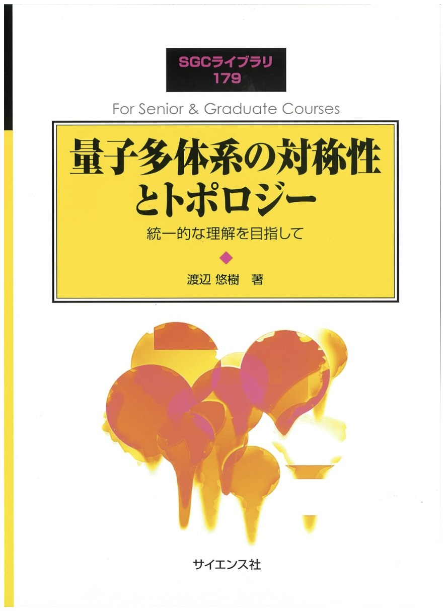

「量子多体系の対称性とトポロジー ―統一的な理解を目指して―」サポートページ

渡辺悠樹 著『量子多体系の対称性とトポロジー ―統一的な理解を目指して―』
SGC ライブラリ, サイエンス社（2022年）
お問い合わせ
本書に関するお問い合わせは以下の掲示板からお願いします。
質問・誤植報告 掲示板
本書に関するご質問や誤植のご指摘をお寄せください。アカウント登録は不要です。
数式は LaTeX 記法で書けます。例：$|\psi\rangle = \sum_n c_n |n\rangle$（インライン）、
$$H = -J \sum_{\langle i,j \rangle} \mathbf{S}_i \cdot \mathbf{S}_j$$（ディスプレイ）。